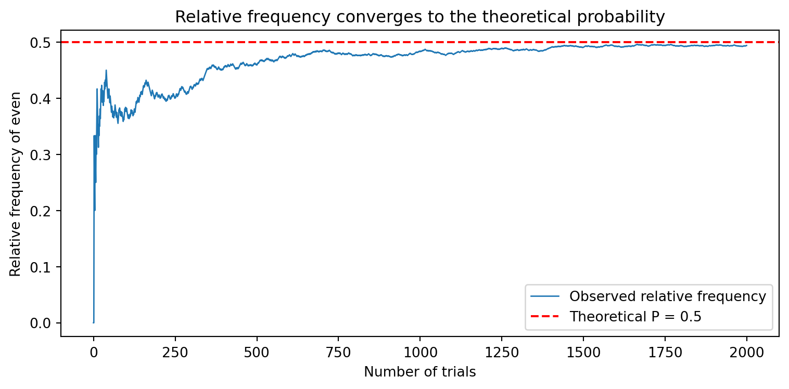

확률을 공부할 때 사람들은 보통 “주사위에서 3이 나올 확률은 1/6” 같은 숫자부터 외웁니다. 하지만 그 1/6이라는 숫자가 어디서 나오는지를 따지면, 항상 그 밑에는 “가능한 결과 전체”라는 무대가 깔려 있습니다. 이 무대가 바로 표본공간(sample space)이고, 우리가 관심 있는 결과들의 묶음이 사건(event)입니다.
이 글의 한 줄 요지는 이렇습니다.
확률은 집합의 언어로 쓰여 있다. 표본공간은 집합이고, 사건은 그 부분집합이며, 사건의 연산은 집합 연산이다.
이걸 코드로 옮길 때 자료형을 무엇으로 고르느냐가 사실 개념 이해의 시금석이 됩니다.
표본공간(Sample Space)
표본공간은 한 번의 실험(experiment)에서 나올 수 있는 모든 결과의 집합입니다. 보통 \(S\) 또는 \(\Omega\)로 씁니다.
핵심은 세 가지입니다.
빠짐없이(exhaustive) — 일어날 수 있는 결과가 전부 들어 있어야 합니다.
겹침 없이(mutually exclusive) — 각 결과는 서로 구분되어, 한 번에 하나만 일어납니다.
집합이다 — 순서도 중복도 의미가 없습니다.
주사위 한 번 던지기의 표본공간:
\[S = \{1, 2, 3, 4, 5, 6\}\]
표본공간은 숫자일 필요가 없다는 점도 기억해 둘 만합니다. 예를 들어 한 직원의 다음 분기 평가 등급이라는 실험의 표본공간은
\[S = \{S,\ A,\ B,\ C,\ D\}\]
처럼 범주(category)일 수도 있습니다. 무대는 숫자가 아니라 ’가능한 결과들’이라는 점이 본질입니다.
사건(Event)
사건은 표본공간의 부분집합입니다. “관심 있는 결과들의 모음”이라고 보면 됩니다.
“짝수가 나온다” → \(A = \{2, 4, 6\}\)
“4 이상이 나온다” → \(B = \{4, 5, 6\}\)
“7이 나온다” → \(\varnothing\) (불가능 사건, 공집합)
“1에서 6 사이가 나온다” → \(S\) (확실한 사건, 표본공간 전체)
정의가 “부분집합”이라는 사실에 주목하세요. 사건이라는 개념 자체가 이미 집합론 위에 서 있습니다.
Python에서는 set으로 — list가 아닌 이유
자연스럽게 질문이 나옵니다. “그럼 Python에서 [1, 2, 3, 4, 5, 6] 같은 리스트로 쓰면 되나?”
쓸 수는 있지만, 개념과 어긋납니다. 표본공간과 사건은 집합이므로 Python의 set이 정의에 정확히 대응합니다. 이유를 본질적으로 따지면:
성질
집합(수학)
set
list
중복
허용 안 함
허용 안 함 ✅
허용함 ❌
순서
의미 없음
의미 없음 ✅
의미 있음 ❌
부분집합·합·교·여집합
기본 연산
연산자 내장 ✅
직접 구현해야 함 ❌
# 표본공간: 주사위 한 번 던지기S = {1, 2, 3, 4, 5, 6}# 사건은 표본공간의 부분집합A = {2, 4, 6} # 짝수가 나오는 사건B = {4, 5, 6} # 4 이상이 나오는 사건print("표본공간 S =", S)print("사건 A (짝수) =", A)print("사건 B (4 이상) =", B)print("A는 S의 부분집합인가?", A <= S)
표본공간 S = {1, 2, 3, 4, 5, 6}
사건 A (짝수) = {2, 4, 6}
사건 B (4 이상) = {4, 5, 6}
A는 S의 부분집합인가? True
사건의 연산 = 집합의 연산
사건을 set으로 표현하면, 수학 기호가 Python 연산자로 1:1 대응됩니다. 이 표 하나가 이 글에서 가장 중요한 부분입니다.
말로 표현
수학 기호
Python
A 또는 B (합집합)
\(A \cup B\)
A \| B
A 그리고 B (교집합)
\(A \cap B\)
A & B
A가 아님 (여집합)
\(A^c\)
S - A
A이지만 B는 아님 (차집합)
\(A \setminus B\)
A - B
A가 B의 부분집합
\(A \subseteq B\)
A <= B
print("A ∪ B (또는) :", A | B) # 합집합print("A ∩ B (그리고) :", A & B) # 교집합print("Aᶜ (A가 아님) :", S - A) # 여집합print("A \\ B (A이고 B아님):", A - B) # 차집합
A ∪ B (또는) : {2, 4, 5, 6}
A ∩ B (그리고) : {4, 6}
Aᶜ (A가 아님) : {1, 3, 5}
A \ B (A이고 B아님): {2}
여집합을 구할 때 S - A라고 쓰는 게 중요합니다. “A가 아니다”는 항상 “표본공간 안에서 A를 뺀 것”이기 때문입니다. 여집합은 표본공간 없이는 정의되지 않습니다 — 무대가 정해져야 “그 밖”을 말할 수 있다는 뜻이죠.
결과가 ’쌍’일 때 — 원소를 튜플로
실험이 복잡해지면 결과 하나가 여러 값의 조합이 됩니다. 주사위를 두 개 던지면, 한 결과는 \((i, j)\) 같은 순서쌍입니다. 집합의 원소로 tuple을 쓰면 그대로 표현됩니다.
# 주사위 두 개 던지기: 결과는 순서쌍 (첫째, 둘째)S2 = {(i, j) for i inrange(1, 7) for j inrange(1, 7)}print("표본공간 크기:", len(S2)) # 6 x 6 = 36# 사건: 두 눈의 합이 7sum_is_7 = {(i, j) for (i, j) in S2 if i + j ==7}print("합이 7인 사건:", sorted(sum_is_7))print("이 사건의 결과 수:", len(sum_is_7))
표본공간 크기: 36
합이 7인 사건: [(1, 6), (2, 5), (3, 4), (4, 3), (5, 2), (6, 1)]
이 사건의 결과 수: 6
여기서 “합이 7일 확률”의 정의가 자연스럽게 따라옵니다. 결과가 모두 똑같이 일어난다(equally likely)고 가정하면,
확률이 결국 “사건의 크기 ÷ 표본공간의 크기”, 즉 부분집합의 원소 수를 세는 일로 환원되는 게 보입니다.
정의로서의 확률 vs 빈도로서의 확률
지금까지 구한 확률은 이론값입니다 — 표본공간을 다 알고, 모든 결과가 똑같이 일어난다고 가정해서 계산했죠. 그런데 현실에서는 실제로 던져 보고 빈도로 확률을 추정하기도 합니다. 이 둘이 같은 값으로 수렴한다는 게 확률론의 출발점(큰 수의 법칙)입니다.
먼저 주사위를 여러 번 던지는 시뮬레이션을 합니다. 여기서는 순서와 중복이 의미 있는 관측값을 다루므로, 자료형이 set이 아니라 list(혹은 배열)로 바뀐다는 점에 주목하세요. 개념을 정의할 땐 set, 실험을 기록할 땐 list — 자료형이 역할에 따라 갈립니다.
import numpy as nprng = np.random.default_rng(42)n =2000rolls = rng.integers(1, 7, size=n) # 1~6 사이 정수를 n번 추출 (관측 기록)# "짝수가 나오는 사건"의 상대빈도is_even = (rolls %2==0)freq_even = is_even.mean()print(f"{n}번 던졌을 때 짝수의 상대빈도 = {freq_even:.4f}")print("이론값 P(짝수) = 0.5")
2000번 던졌을 때 짝수의 상대빈도 = 0.4940
이론값 P(짝수) = 0.5
빈도가 이론값으로 수렴하는 모습
던지는 횟수를 늘릴수록 상대빈도가 이론값 0.5로 다가가는 과정을 그려 봅니다.
import matplotlib.pyplot as plt# 누적 상대빈도: 매 시점까지의 짝수 비율running_freq = np.cumsum(is_even) / np.arange(1, n +1)plt.figure(figsize=(8, 4))plt.plot(running_freq, lw=1, label="Observed relative frequency")plt.axhline(0.5, color="red", ls="--", label="Theoretical P = 0.5")plt.xlabel("Number of trials")plt.ylabel("Relative frequency of even")plt.title("Relative frequency converges to the theoretical probability")plt.legend()plt.tight_layout()plt.show()

초반에는 출렁이지만 시행이 쌓일수록 0.5 부근으로 가라앉습니다. 표본공간 위에서 계산한 이론적 확률과, 실험에서 관측한 빈도가 만나는 지점 — 이것이 다음 글들에서 다룰 큰 수의 법칙의 직관입니다.
Note
그림의 축 라벨은 한글 폰트 설정 없이도 깨지지 않도록 영어로 두었습니다. 한글 라벨을 쓰려면 matplotlib에 한글 폰트(예: Malgun Gothic, AppleGothic, NanumGothic)를 지정하면 됩니다.
정리
표본공간 \(S\): 가능한 모든 결과의 집합. 빠짐없이, 겹침 없이.
사건: 표본공간의 부분집합. “관심 있는 결과들.”
개념을 코드로 옮길 땐 set — 중복·순서가 없고, 합·교·여집합 연산이 수학 기호와 그대로 대응합니다.
결과가 조합이면 원소를 tuple로.
확률은 결국 부분집합의 크기를 세는 일이고, 실험을 기록·시뮬레이션할 땐 list/배열로 빈도를 본다.
다음 글에서는 이 위에서 확률의 공리(axioms of probability)와 조건부 확률로 넘어가, “사건이 일어났다는 정보가 다른 사건의 확률을 어떻게 바꾸는가”를 다뤄 보겠습니다.
Source Code
---title: "표본공간과 사건: 확률의 출발점"description: "확률을 '집합의 언어'로 다시 보기 — 왜 list가 아니라 set인가"author: "김기웅"date: "2026-05-30"categories: [통계학, 확률, Python]format: html: theme: cosmo toc: true toc-depth: 3 code-fold: false code-tools: true highlight-style: githubjupyter: python3---## 왜 '표본공간'에서 시작하는가확률을 공부할 때 사람들은 보통 "주사위에서 3이 나올 확률은 1/6" 같은 **숫자**부터 외웁니다. 하지만 그 1/6이라는 숫자가 *어디서* 나오는지를 따지면, 항상 그 밑에는 **"가능한 결과 전체"**라는 무대가 깔려 있습니다. 이 무대가 바로 표본공간(sample space)이고, 우리가 관심 있는 결과들의 묶음이 사건(event)입니다.이 글의 한 줄 요지는 이렇습니다.> **확률은 집합의 언어로 쓰여 있다.** 표본공간은 집합이고, 사건은 그 부분집합이며, 사건의 연산은 집합 연산이다.이걸 코드로 옮길 때 자료형을 무엇으로 고르느냐가 사실 개념 이해의 시금석이 됩니다.## 표본공간(Sample Space)**표본공간**은 한 번의 실험(experiment)에서 나올 수 있는 **모든 결과의 집합**입니다. 보통 $S$ 또는 $\Omega$로 씁니다.핵심은 세 가지입니다.- **빠짐없이(exhaustive)** — 일어날 수 있는 결과가 전부 들어 있어야 합니다.- **겹침 없이(mutually exclusive)** — 각 결과는 서로 구분되어, 한 번에 하나만 일어납니다.- **집합이다** — 순서도 중복도 의미가 없습니다.주사위 한 번 던지기의 표본공간:$$S = \{1, 2, 3, 4, 5, 6\}$$표본공간은 **숫자일 필요가 없다**는 점도 기억해 둘 만합니다. 예를 들어 한 직원의 다음 분기 평가 등급이라는 실험의 표본공간은$$S = \{S,\ A,\ B,\ C,\ D\}$$처럼 범주(category)일 수도 있습니다. 무대는 숫자가 아니라 '가능한 결과들'이라는 점이 본질입니다.## 사건(Event)**사건**은 표본공간의 **부분집합**입니다. "관심 있는 결과들의 모음"이라고 보면 됩니다.- "짝수가 나온다" → $A = \{2, 4, 6\}$- "4 이상이 나온다" → $B = \{4, 5, 6\}$- "7이 나온다" → $\varnothing$ (불가능 사건, 공집합)- "1에서 6 사이가 나온다" → $S$ (확실한 사건, 표본공간 전체)정의가 "부분집합"이라는 사실에 주목하세요. 사건이라는 개념 자체가 이미 집합론 위에 서 있습니다.## Python에서는 `set`으로 — `list`가 아닌 이유자연스럽게 질문이 나옵니다. "그럼 Python에서 `[1, 2, 3, 4, 5, 6]` 같은 리스트로 쓰면 되나?"쓸 수는 있지만, **개념과 어긋납니다.** 표본공간과 사건은 *집합*이므로 Python의 `set`이 정의에 정확히 대응합니다. 이유를 본질적으로 따지면:| 성질 | 집합(수학) |`set`|`list`||---|---|---|---|| 중복 | 허용 안 함 | 허용 안 함 ✅ | 허용함 ❌ || 순서 | 의미 없음 | 의미 없음 ✅ | 의미 있음 ❌ || 부분집합·합·교·여집합 | 기본 연산 | 연산자 내장 ✅ | 직접 구현해야 함 ❌ |```{python}# 표본공간: 주사위 한 번 던지기S = {1, 2, 3, 4, 5, 6}# 사건은 표본공간의 부분집합A = {2, 4, 6} # 짝수가 나오는 사건B = {4, 5, 6} # 4 이상이 나오는 사건print("표본공간 S =", S)print("사건 A (짝수) =", A)print("사건 B (4 이상) =", B)print("A는 S의 부분집합인가?", A <= S)```## 사건의 연산 = 집합의 연산사건을 `set`으로 표현하면, 수학 기호가 Python 연산자로 **1:1 대응**됩니다. 이 표 하나가 이 글에서 가장 중요한 부분입니다.| 말로 표현 | 수학 기호 | Python ||---|---|---|| A 또는 B (합집합) | $A \cup B$ |`A \| B`|| A 그리고 B (교집합) | $A \cap B$ |`A & B`|| A가 아님 (여집합) | $A^c$ |`S - A`|| A이지만 B는 아님 (차집합) | $A \setminus B$ |`A - B`|| A가 B의 부분집합 | $A \subseteq B$ |`A <= B`|```{python}print("A ∪ B (또는) :", A | B) # 합집합print("A ∩ B (그리고) :", A & B) # 교집합print("Aᶜ (A가 아님) :", S - A) # 여집합print("A \\ B (A이고 B아님):", A - B) # 차집합```여집합을 구할 때 `S - A`라고 쓰는 게 중요합니다. **"A가 아니다"는 항상 "표본공간 안에서 A를 뺀 것"**이기 때문입니다. 여집합은 표본공간 없이는 정의되지 않습니다 — 무대가 정해져야 "그 밖"을 말할 수 있다는 뜻이죠.## 결과가 '쌍'일 때 — 원소를 튜플로실험이 복잡해지면 결과 하나가 여러 값의 조합이 됩니다. 주사위를 **두 개** 던지면, 한 결과는 $(i, j)$ 같은 순서쌍입니다. 집합의 원소로 `tuple`을 쓰면 그대로 표현됩니다.```{python}# 주사위 두 개 던지기: 결과는 순서쌍 (첫째, 둘째)S2 = {(i, j) for i inrange(1, 7) for j inrange(1, 7)}print("표본공간 크기:", len(S2)) # 6 x 6 = 36# 사건: 두 눈의 합이 7sum_is_7 = {(i, j) for (i, j) in S2 if i + j ==7}print("합이 7인 사건:", sorted(sum_is_7))print("이 사건의 결과 수:", len(sum_is_7))```여기서 "합이 7일 확률"의 정의가 자연스럽게 따라옵니다. 결과가 모두 똑같이 일어난다(equally likely)고 가정하면,$$P(\text{합}=7) = \frac{|\{(i,j): i+j=7\}|}{|S|} = \frac{6}{36} = \frac{1}{6}$$```{python}p_sum7 =len(sum_is_7) /len(S2)print(f"P(합=7) = {p_sum7:.4f}")```확률이 결국 **"사건의 크기 ÷ 표본공간의 크기"**, 즉 부분집합의 원소 수를 세는 일로 환원되는 게 보입니다.## 정의로서의 확률 vs 빈도로서의 확률지금까지 구한 확률은 **이론값**입니다 — 표본공간을 다 알고, 모든 결과가 똑같이 일어난다고 가정해서 계산했죠. 그런데 현실에서는 실제로 던져 보고 **빈도**로 확률을 추정하기도 합니다. 이 둘이 같은 값으로 수렴한다는 게 확률론의 출발점(큰 수의 법칙)입니다.먼저 주사위를 여러 번 던지는 시뮬레이션을 합니다. 여기서는 **순서와 중복이 의미 있는 관측값**을 다루므로, 자료형이 `set`이 아니라 `list`(혹은 배열)로 바뀐다는 점에 주목하세요. **개념을 정의할 땐 `set`, 실험을 기록할 땐 `list`** — 자료형이 역할에 따라 갈립니다.```{python}import numpy as nprng = np.random.default_rng(42)n =2000rolls = rng.integers(1, 7, size=n) # 1~6 사이 정수를 n번 추출 (관측 기록)# "짝수가 나오는 사건"의 상대빈도is_even = (rolls %2==0)freq_even = is_even.mean()print(f"{n}번 던졌을 때 짝수의 상대빈도 = {freq_even:.4f}")print("이론값 P(짝수) = 0.5")```## 빈도가 이론값으로 수렴하는 모습던지는 횟수를 늘릴수록 상대빈도가 이론값 0.5로 다가가는 과정을 그려 봅니다.```{python}import matplotlib.pyplot as plt# 누적 상대빈도: 매 시점까지의 짝수 비율running_freq = np.cumsum(is_even) / np.arange(1, n +1)plt.figure(figsize=(8, 4))plt.plot(running_freq, lw=1, label="Observed relative frequency")plt.axhline(0.5, color="red", ls="--", label="Theoretical P = 0.5")plt.xlabel("Number of trials")plt.ylabel("Relative frequency of even")plt.title("Relative frequency converges to the theoretical probability")plt.legend()plt.tight_layout()plt.show()```초반에는 출렁이지만 시행이 쌓일수록 0.5 부근으로 가라앉습니다. **표본공간 위에서 계산한 이론적 확률과, 실험에서 관측한 빈도가 만나는 지점** — 이것이 다음 글들에서 다룰 큰 수의 법칙의 직관입니다.::: {.callout-note}그림의 축 라벨은 한글 폰트 설정 없이도 깨지지 않도록 영어로 두었습니다. 한글 라벨을 쓰려면 `matplotlib`에 한글 폰트(예: `Malgun Gothic`, `AppleGothic`, `NanumGothic`)를 지정하면 됩니다.:::## 정리- **표본공간 $S$**: 가능한 모든 결과의 집합. 빠짐없이, 겹침 없이.- **사건**: 표본공간의 부분집합. "관심 있는 결과들."- 개념을 코드로 옮길 땐 **`set`** — 중복·순서가 없고, 합·교·여집합 연산이 수학 기호와 그대로 대응합니다.- 결과가 조합이면 원소를 **`tuple`**로.- 확률은 결국 **부분집합의 크기를 세는 일**이고, 실험을 기록·시뮬레이션할 땐 **`list`/배열**로 빈도를 본다.다음 글에서는 이 위에서 **확률의 공리(axioms of probability)**와 **조건부 확률**로 넘어가, "사건이 일어났다는 정보가 다른 사건의 확률을 어떻게 바꾸는가"를 다뤄 보겠습니다.